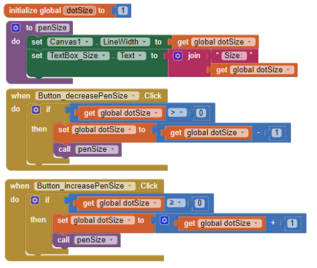
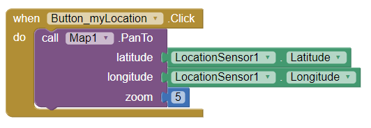
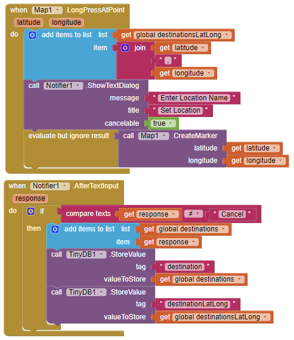

3.2 - Paint Pot Tutorial
1. Explain the meaning of the statements shown here, both in AP CSP pseudocode and App Inventor. For example, suppose the variable x has the value 10 before the statement is executed. What value would it have after the statement is executed?
Given the APCSP pseudocode, where x ← x + 1, what this means is that the variable x is equal to x + 1. If x had a value equivalent to 10, that would be the input, and since that is the input it will be x ← (10) + 1, which is equal to 11. The App Inventor code is displaying the same function but in block code, what it is saying is too set the global variable of x to x + 1, so if x is equal to 10, then it will be 10 + 1, so the code will set the global x variable to 11.
2. One aspect of abstraction is that it helps to reduce details to focus on what's relevant. How does the use of a variable, such as dotsize, instead of a value, such as '5', help to reduce detail and focus on what is essential in this program?
The use of a variable, such as dotsize, allows the user to be familiar with a simple or general classification for a function. Using a variable with a simple to identify name allows the coding process to be easily organized instead of having to see actual number values which can cause confusion.
3.3 - Representing Images
1. Decode this message by converting it from binary to ASCII: 1000001 1110000 1110000 0100000 1001001 1101110 1110110 1100101 1101110 1110100 1101111 1110010 0100000 1010010 1001111 100001 1001011 1010011 0100001.
When converting the binary code, I convert the bits into decimal numbers ignoring values that reach higher than 26. What results is: 1,16,16, 9,14,22,5,14,20,15,18, ,18,15,3,11,19,1. These numbers correspond to the numbering of the alphabet system. So the final message would be “App Inventor Rocks!”.
2. Describe what it means to say that JPEG is a lossy compression technique and whether or not it affects the quality of camera pictures.
When stating that JPEG is a lossy compression technique, what this means is that some data are thrown away to make space. As a result of the data thrown away the quality or resolution of the image is decreased.
3. Give a specific example of a binary sequence that can represent more than one type of data -- e.g., a number, a color, a character -- and describe how to interpret its different values.
1000100 is an example of a binary sequence that can be represented through more than one type of data. This can be seen as the letter I or seen as number 68. To interpret the different values within this binary sequence, you must refer to the question of the context of what you are trying to convert this sequence too. For example, you can convert it to ASCII or to Base 10, 5, 8, etc.
3.4 - Paint Pot Projects
1. For enhancement #5 (the "If Block Exercise"), give a brief description of your solution to this problem. PROVIDE A SCREENSHOT OF YOUR APP'S CODE -- the revised blocks -- and describe how the if/else block works to solve the problem in this case. If appropriate, include a description of any significant problems or bugs you encountered in solving this problem. App Inventor now has a Download Blocks as Image feature (right-click on the white space in the blocks editor to choose) that also can be used to take a screenshot of all of your code or the Windows snipping tool can be used.

The solution in order to fix the negative value error of the dotSize is to use an if-then statement to prevent the value of dotSize from reaching a negative number. More specifically when you click the decrease dotSize button, the value of dotSize will be subtracted by 1 only if the dot size is greater than 0, if it is not greater than 0 then it will not be able to be decreased.
2. When you use the Camera component to take a picture as the Canvas background, explain why the picture goes away when the app is restarted. HINT: Think about the different hardware components we talked about in an earlier lesson and where on the device the picture is stored. What do you think could be done to prevent the picture from disappearing when the app is restarted?
When you use the Camera component to take a picture as the Canvas background, the picture goes away when the app is restarted because there is no storage that saves the data of the background. To prevent the background image from disappearing when the app is restarted we would need to use a tiny DB in order to save that data. This tiny DB stores the background image even if the app is restarted.
3.5 - Paint Pot Refactoring and Procedural Abstraction
1. The Wikipedia article on refactoring talks about code smell and one motivation for engaging in refactoring. What is code smell? Describe briefly two examples of "code smell" and how refactoring would eliminate them.
Code smell a factor or system that indicates internal problems within the source code of a program. Two examples of code smell include duplicated code or contrived complexity, or the use of overcomplicated design patterns where simpler coding would work as well. Refactoring would eliminate this issue through its restructuring process tat changes the factoring of existing computer code without changing any essential behaviors while getting rid of issues like code smells.
2. Insert a screenshot of the procedure from your app below.
3. What are the advantages of using procedural abstraction? Name at least 2 advantages.
The major advantage of using procedural abstraction is that it creates a much more simple and organized way of setting up code as well as making the code easily understood as it makes a subject more general rather than using the detailed or complex identification of the code.
3.6 - Error Detection
1. (POGIL) Describe an algorithm for identifying the card that was flipped.
First place down the initial rows and columns of cards face down. Then have a random amount of cards flipped up within the rows and columns. Count the number of faced cards. Add in a parity row and column that makes the number of faced cards either all even or all odd. To determine the errors, if faced cards are not even or odd (depending on how you arranged the parity cards) within a row or column then there is an error. Fix the error by flipping the card to its original placement to make sure it is even.
2. (POGIL) The card "trick" shows that it is always possible to identify the card that was flipped as long as only one card was flipped. Would it be possible always to determine if an error occurred if two cards were flipped?
Yes, it is always possible to identify an error when two cards are flipped. This is the case because the cards are set up in a way in which the rows and columns of the cards are able to indicate an error. If there were two cards that were flipped, we would be able to determine that there will be two errors indicated by the rows and columns, it will just be harder to find the exact position of where the error is occurring.
3.7 - Parity Error Checking
1. Explain how the error card trick from the Error Detection lesson uses a parity scheme. Was it an even or odd parity scheme?
The error card trick from the Error Detection lesson uses a parity scheme through the use of an extra set of row and column. This extra set is set to even correspond with the already flipped cards. This is then used to detect an error by identifying the row or column of cards that do not fit with the even parity scheme.
2. What are some of the limitations of using parity bits for error detection?
The limitation of using parity bits for error detection is that it is less reliable when trying to identify more than one error. The parity bits are proficient when it comes to finding one error, but when there is a second one the parity bits will be able to determine that there are 2 errors but will not be able to find its exact location within the sequence.
3. Another type of error detection is a checksum. Research what a checksum is and then describe it in your own words. Can a checksum identify where an error occurs?
The checksum error detection uses the sending and receiving sequences of binary code in order to determine the error within the row of code. The sum of sender codes is then turned into a complementary sequence, which is an inverse of the code received. Then you would use the same code from the sender and add with receiver codes and add them again, but in the end, you add in the complementary sequence from the first sum to the second sum, then determine the second complementary sequence in the final sequence. If it is all zeros then there is no error, if there is a one anywhere from that complementary sequence then there is an error in the position where the one is located.
4. (Optional) Explain in your own words the difference between error detection and error correction. Describe how the error correction process used in the video above allows the computer to fix errors.
Error detection is to determine or detect an error found within the data of bits. While error correction actually finds and fixes the error. The error correction allows the computer to fix errors through hamming coding, which uses three circles that are together and intersect to create four regions. When there is an error, the code can determine where the actual code is in the intersections and three parity bits are added to the outside. When a parity bit detects an error from the intersecting regions then it will automatically switch the error to fulfill the even placement of data.
3.8 - Map Tour Tutorial
1. How are lists used in this app? Why is a list a useful data abstraction or an abstract data type (ADT) in programming? Is it easy to add new destinations to the tour?
Lists are used to identify the location, latitude, and longitude of a location on this planet. A list is a useful data abstraction as it can be easily identified and used to organize lines of codes. It is easy to add new destinations to the tour as all you need to do is add another string text to the list.
2. How do APIs simplify complex programming tasks? Pick an app that you use on your device (e.g. Twitter, Google Maps) and see whether it provides an API and some of the functions you can control with it. Describe your results below.
Application programming interfaces simply complex programming tasks by bringing an input of a user directly to the system in which it can process the request and then returned to the user who made the input. Most often an app will have APIs for example on the app, Youtube, one API that they have is their search function to find videos. What you can do with this is that you can search for specific videos found throughout the platform. A user can search for example for, coding tutorials, and then the API will send that search to the system then take that request and send it back to the user by displaying videos relevant to the search.
3. How is GPS used in this app? Do some research to find out how GPS works and describe it here in a couple of sentences.
In MIT App Inventor the GPS component is used through the location sensor that detects the location of the android device. This sensor uses an internet connection to determine one’s location through latitude and longitude values. This location sensor also determines if the device is moving or not, depending on the device.
4. Insert screenshots of the enhancements that you made below and describe how they work.

This is a function that displays the current user’s location or where the device the user is using is located. This works by using a location sensor that is utilized through the .PanTo function that uses the location sensor’s latitude and longitude in order to shift the map to the user’s location.
3.9 - Map Tour with Tiny DB
1. What does it mean to say that data is 'persistent'?
The term persistent in the context of data is defined as something that does not go away, so for example when you close or restart the app, the data will not be deleted, instead, it will be preserved and kept within the storage. The data is essentially saved to the device.
2. What's the difference, in terms of where data is located, for data stored in a global variable vs. data stored in a database?
In terms of where data is located, when stored in a global variable data, changes within the variable will reset when the application is restarted to its original settings. When stored in a database, data is secured in storage where the data does not change unless it is deleted.
3. Include screenshots and explanations of your enhancements.

The enhancement that I made is a function that sets a location into the TinyDB and into the destination list picker. When you press onto the screen long enough, a marker will be set at that location and a notification will pop up a notification that asks to insert a location name for the set point. After the text input, the location will be added to the destination list and the destination value and destination latitude and longitude will be added to the TinyDB to store the value-added.
3.10 - Impacts of CS: Electronic Documents
1. What is metadata? Give an example of how a piece of metadata could be used to increase the usefulness of an image or document.
Metadata is the information that is included about a document it comes with. It identifies the recent changes and who did it. For example, when someone is sending an email, an example of metadata is the text that better emphasize when the email was sent if it was up-to-date or not, or who it was sent by, etc. It gives more context or details of the background of the document or image.
2. What is a model?
A model is a representation of a photograph in bits or a representation of something that is real and physical in bits, or pixels to display the image.
3. What's the difference between a raster image and an ASCII representation of a text document?
A raster image is better for images and shapes as it uses bits represented through pixels to display an image while ASCII is better for document or text-based material like PDF files as it uses the alphabet system to represent a letter or symbol.
4. What are filename extensions? What are they used for?
Filename extensions are the three letters after the dot at the end of a filename that indicates how the content is to be interpreted. They are used to represent images, documents, audio files, video files, graphic formats, executable programs, etc.
5. What is lossless representation? What is lossy representation? What are the trade-offs in using each representation?
Lossless representation allows exactly the same image to be rendered, so no data loss is occurring, while lossy representation allows an approximation to the same image to be rendered, so data is through away to compress the file or lowering of resolution or quality of an image or file. Lossless representation is beneficial in the sense that it retains a higher quality and that there is no data loss but it has a larger file size making it take longer to load. Lossy representation has a smaller file size making it faster to load but you sacrifice the quality of an image because data is lost during compression.
6. What is steganography and what is it used for? Describe in your own words the steganography algorithm used in the activity.
Steganography is the art of sending secret messages in an unnoticeable way. It is used to send a message to specific people who know how to read the message but seem like nothing to the ordinary people. For example, the steganography algorithm can use text or images or audio files to hide bits of code to later form into a message through ASCII.
7. What would you have to do to delete a document from your computer so that it could not possibly be read by anyone else?
To delete a document from your computer so that it could not possibly be read by anyone else is to execute an “Empty Trash” command, which puts deleted blocks into the pool, which essentially overwrites the old data to delete it.
8. What is free and open-source software? Provide an example.
Free software is a matter of users’ freedom to run, copy, distribute, study, change, and improve the software, whereas open-source software is a software development methodology emphasizing shared effort and peer review to improve the quality of the software.
9. How has retouching become a controversial issue? Give an example.
Retouching is the process of altering an original image to make it look different or make it appeal to the desire of the one who is altering the image. This is controversial in the sense that people can create a fake representation of themselves to influence others. For example, this is often seen in social media apps like Instagram where public figures alter the image of their body through the use of image editing software like Photoshop to change their image to look appealing.
10. Would you rather own a camera (or camera phone) with a higher number of megapixels or lower? Explain.
I would rather own a camera with a higher number of megapixels than lower. A camera with a higher number of megapixels contains more pixels that correspond with the quality of images. So I would rather pick a higher number of megapixels photos produced will have better image quality.
11. Other than digital images, what might be an example of a computer model? Explain your answer based on the definition of a model.
A model is a representation of real-life objects or things in bits, so an example of a computer model can be a video game. This works because video games display objects and other things that relate to real-life though the use of algorithms that allow them to function and displayed through pixels that are then converted into a moving image through the rapid change in frames.
12. The code that implements App Inventor is open source and its impact on education is obvious. Find another example of open source software and describe its positive impact on education, business or society.
CodePen is an example of open-source software, this is great in the sense that it exposes people to learn and explore coding, as it allows the user to create programs through it’s already programmed, HTML, CSS, and javascript software. It is a great way to do coding.